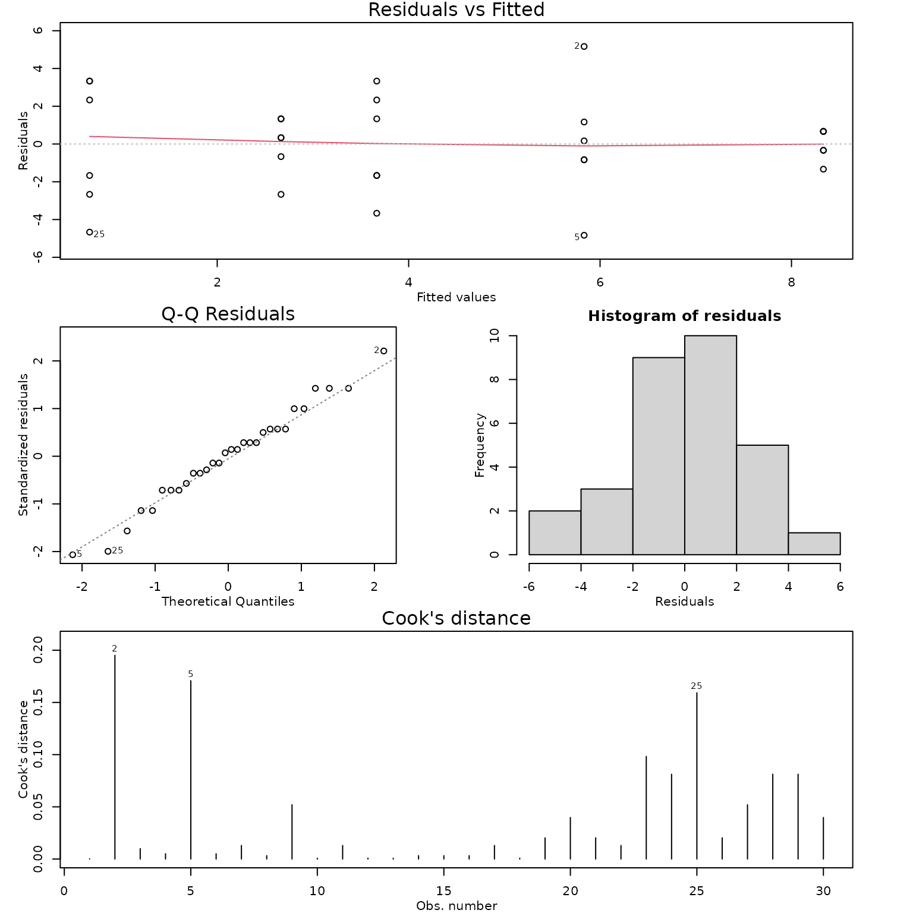

Case Study 11.3: STATS 201/8 Extra Case Study - Oneway ANOVA Model
Source:vignettes/articles/CS11_3.Rmd
CS11_3.RmdQuestion 1
A musical college wished to study the effectiveness of various practice methods for its trombonists. To this end 30 trombonists were randomly assigned to one of 5 practice methods. Each student’s ability with the trombone was initially assessed. To assess improvement, after a set period of time using the assigned practice method only, they reassessed each student and recorded the difference between the student’s final and initial scores.
The resulting data are in the file trombone.csv, which contains the variables:
| Variable | Description |
|---|---|
| diff | The difference in trombone assessment scores (after – before). |
| method | The practice method assigned to the student: NP - no practice control, MP - mental practice only, MPS - mental practice with simulated slide movement, PP - physical practice only, CP - combination of mental and physical practice |
We are interested in whether any of the methods show significant improvement. If so, which method shows the most significant improvement and by how much?
Instructions:
- Comment on what the plot of the data and summary statistics reveal.
- Fit an appropriate model to the data and check the assumptions. Generate the inference output you need from the final model.
- Write a Method and Assumption Checks section.
- Write an Executive Summary. Remember to just focus on answering what we are interested in.
Question of interest/goal of the study
We wish to identify the most promising trombone practice method. Do any of the methods show significant improvement? If so, which method shows the most significant improvement and by how much?
Inspect the data
load(system.file("extdata", "trombone.df.rda", package = "s20x"))
trombone.df <- read.csv("trombone.csv", header = TRUE, stringsAsFactors = TRUE)
trombone.df$method <- factor(trombone.df$method, levels = c("NP", "MP", "MPS", "PP", "CP"))
stripchart(diff ~ method, data = trombone.df, vertical = TRUE, pch = 16, cex = 1.5, method = "stack", ylab = "Difference in scores", main = "Score change vs Training method")
summaryStats(diff ~ method, data = trombone.df)## Sample Size Mean Median Std Dev Midspread
## NP 6 0.6666667 1.0 3.4448028 5.50
## MP 6 2.6666667 3.0 1.5055453 1.50
## MPS 6 3.6666667 3.5 2.7325202 3.75
## PP 6 5.8333333 5.5 3.2506410 1.75
## CP 6 8.3333333 8.5 0.8164966 1.00Comment on the plots and summary statistics.
The no practice group has the lowest average change in score, with half of the students’ scores dropping in value. The physical practice and combined mental and physical practice groups appeared to have the highest average increases in scores. The variability of the scores was similar for 3 groups, but lower for the mental practice only and combined groups.
Fit appropriate model and check assumptions
trombone.fit <- lm(diff ~ method, data = trombone.df)
modelcheck(trombone.fit)
anova(trombone.fit)## Analysis of Variance Table
##
## Response: diff
## Df Sum Sq Mean Sq F value Pr(>F)
## method 4 209.20 52.300 7.9645 0.0002771 ***
## Residuals 25 164.17 6.567
## ---
## Signif. codes: 0 '***' 0.001 '**' 0.01 '*' 0.05 '.' 0.1 ' ' 1
summary(trombone.fit)##
## Call:
## lm(formula = diff ~ method, data = trombone.df)
##
## Residuals:
## Min 1Q Median 3Q Max
## -4.833 -1.583 0.250 1.333 5.167
##
## Coefficients:
## Estimate Std. Error t value Pr(>|t|)
## (Intercept) 0.6667 1.0462 0.637 0.5298
## methodMP 2.0000 1.4795 1.352 0.1885
## methodMPS 3.0000 1.4795 2.028 0.0534 .
## methodPP 5.1667 1.4795 3.492 0.0018 **
## methodCP 7.6667 1.4795 5.182 2.33e-05 ***
## ---
## Signif. codes: 0 '***' 0.001 '**' 0.01 '*' 0.05 '.' 0.1 ' ' 1
##
## Residual standard error: 2.563 on 25 degrees of freedom
## Multiple R-squared: 0.5603, Adjusted R-squared: 0.49
## F-statistic: 7.964 on 4 and 25 DF, p-value: 0.0002771## contrast estimate SE df lower.CL upper.CL t.ratio p.value
## NP - MP -2.00 1.48 25 -6.35 2.345 -1.352 0.6626
## NP - MPS -3.00 1.48 25 -7.35 1.345 -2.028 0.2824
## NP - PP -5.17 1.48 25 -9.51 -0.822 -3.492 0.0141
## NP - CP -7.67 1.48 25 -12.01 -3.322 -5.182 0.0002
## MP - MPS -1.00 1.48 25 -5.35 3.345 -0.676 0.9598
## MP - PP -3.17 1.48 25 -7.51 1.178 -2.140 0.2351
## MP - CP -5.67 1.48 25 -10.01 -1.322 -3.830 0.0063
## MPS - PP -2.17 1.48 25 -6.51 2.178 -1.464 0.5938
## MPS - CP -4.67 1.48 25 -9.01 -0.322 -3.154 0.0309
## PP - CP -2.50 1.48 25 -6.85 1.845 -1.690 0.4579
##
## Confidence level used: 0.95
## Conf-level adjustment: tukey method for comparing a family of 5 estimates
## P value adjustment: tukey method for comparing a family of 5 estimates
# Extra code just to extract significant pairs
trom.pairs = pairs(emmeans(trombone.fit, "method"), infer = TRUE)
sig.pairs = subset(data.frame(trom.pairs), p.value < 0.05)
sig.pairs## contrast estimate SE df lower.CL upper.CL t.ratio p.value
## 3 NP - PP -5.166667 1.479489 25 -9.511736 -0.8215968 -3.492196 0.0141361076
## 4 NP - CP -7.666667 1.479489 25 -12.011736 -3.3215968 -5.181968 0.0002090927
## 7 MP - CP -5.666667 1.479489 25 -10.011736 -1.3215968 -3.830150 0.0062646253
## 9 MPS - CP -4.666667 1.479489 25 -9.011736 -0.3215968 -3.154241 0.0309065923Methods and assumption checks
As we have one explanatory variable which is a factor with five levels we have fitted a oneway ANOVA model to the data.
One student’s performance should not affect the performance of another, and the students are assigned randomly. There are differences in the within-group variability, but we have very small individual sample sizes. As we have equal sample sizes and there is no consistent pattern in the residuals (the variability does not increase with the average), the EOV assumptions should be valid. The residuals look approximately normal. There are no obvious influential points. We can therefore rely on the results from fitting this linear model.
Our model is:
where equals 1 if student was trained using mental practice only and 0 otherwise (similar for , and ), and . (Note: is the mean improvement of students without any practice.)
Alternatively our model is:
where is the overall mean improvement score for all students and is the effect of working under strategy .
Our model explains 56% of the variation in improvement scores.
Executive Summary:
A musical college wished to study the effectiveness of various practice methods for its trombonists. Four methods: mental practice only; mental practice with simulated slide movement; physical practice only; and combined mental and physical practice were trialled and compared to no practice.
We found strong evidence that practice method had an influence on the students improvement scores.
Both physical practice only and a combination of physical and mental practice showed significantly better improvement in scores than the no practice schedule, with the combination showing the largest improvement.
On average, a student following a combined practice schedule improved by between 3.3 and 12 points more compared to a student with the no practice schedule.